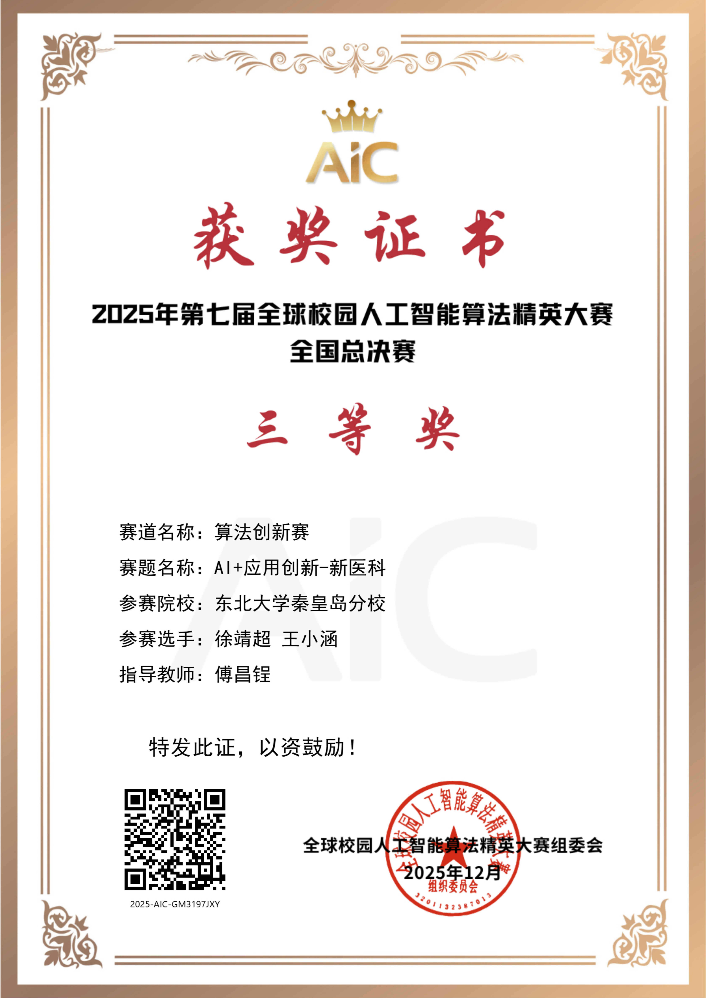
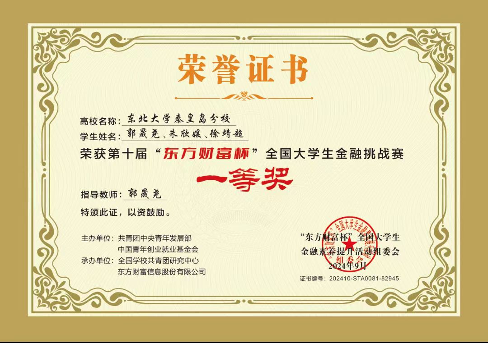
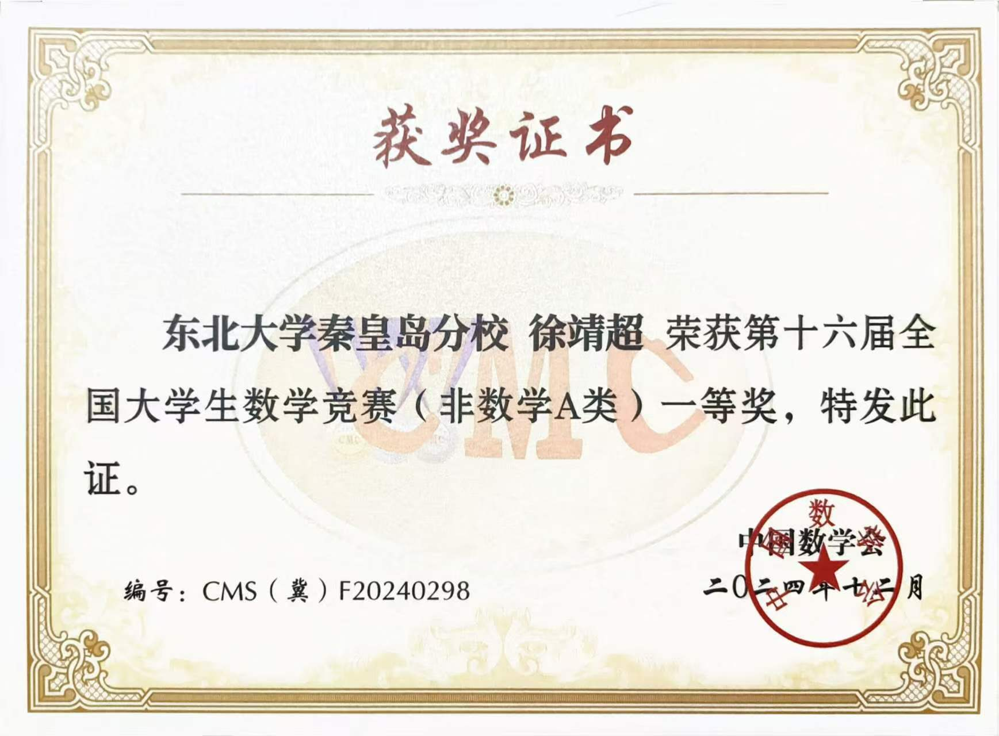
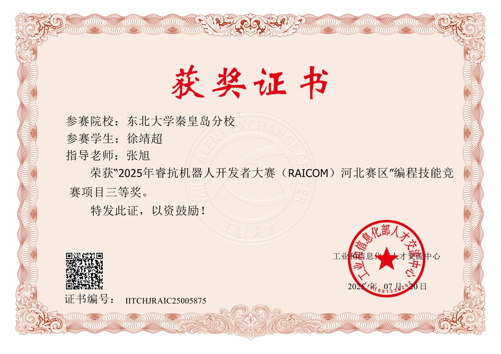
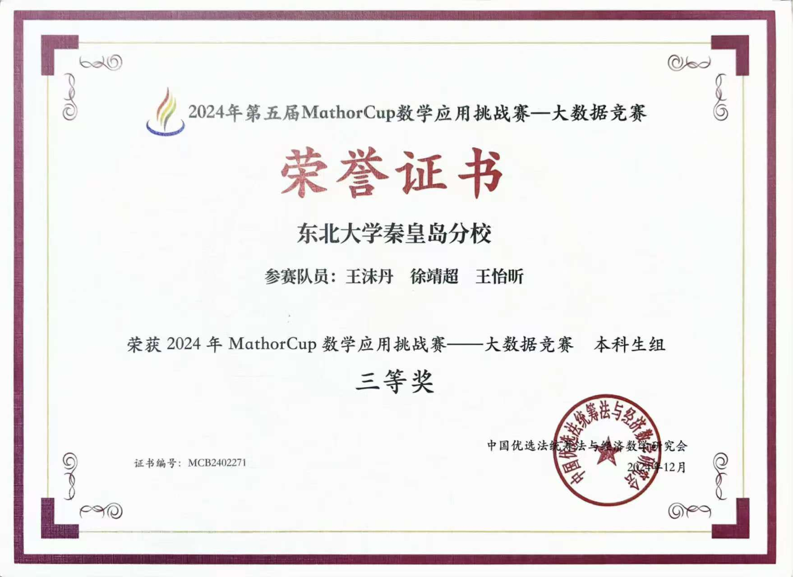
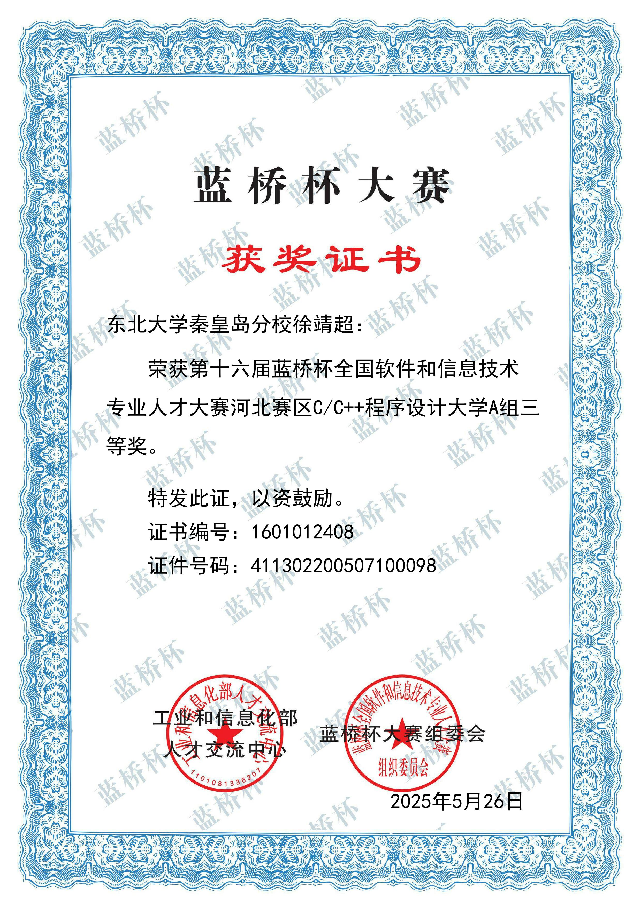
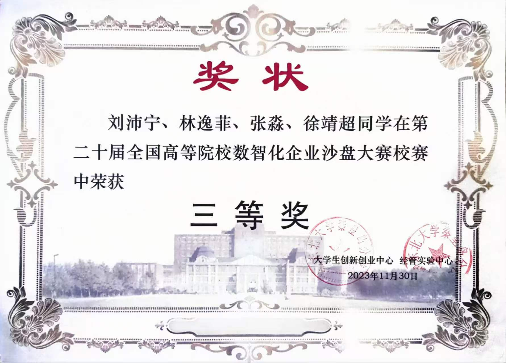

全球大学生人工智能算法精英大赛
2025以"基于个体差异感知的 AI 多模态心理健康检测系统"参赛人工智能创新赛道。作为团队负责人，主导创新方案撰写、答辩 PPT 设计与省赛、国赛现场答辩，完整呈现系统的技术创新点与落地应用价值，最终斩获国家级奖项。
以"基于个体差异感知的 AI 多模态心理健康检测系统"参赛人工智能创新赛道。作为团队负责人，主导创新方案撰写、答辩 PPT 设计与省赛、国赛现场答辩，完整呈现系统的技术创新点与落地应用价值，最终斩获国家级奖项。
作为团队核心成员，基于历史股票涨跌情况构建量化选股模型，结合统计特征与趋势信号筛选目标标的，贡献团队主要建模思路，最终凭借优秀的策略收益表现获得国家一等奖。
作为团队负责人，针对 NIPT (无创产前检测) 检测时点优化与胎儿异常判定问题展开建模。主要负责数据预处理与核心模型构建，从原始数据清洗、特征工程到预测建模与结果解释，搭建完整建模流水线，最终获得省一等奖。
作为团队负责人参赛，主要负责数据预处理与数学建模工作。协调团队成员分工、模型选型与结果验证，确保整体建模思路连贯、结论可信，最终获得一等奖。
全国性大学生数学专业知识竞赛，独立完成涵盖高等数学、线性代数、解析几何等内容的闭卷笔试，凭借扎实的数学功底与解题能力获得省一等奖。
国内最具影响力的大学生程序设计竞赛之一。独立完成涉及数据结构、动态规划、图论等多类型算法题目，在有限时间内完成代码实现与调试，获得省三等奖。
算法程序设计类个人赛事。独立完成算法设计、数据结构应用与计算思维类题目，在赛时压力下保持稳定的解题与调试能力，获得省三等奖。






